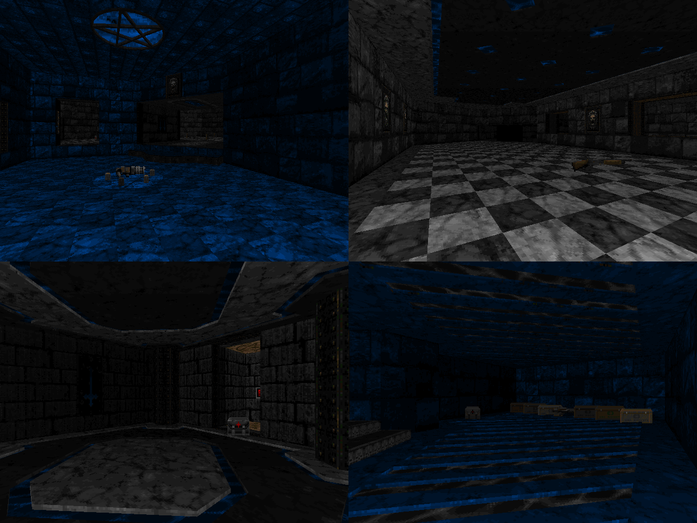

DOWNLOAD LINKS


| Year | 2022 |
| IWAD | doom2.wad |
| Source port | MBF21-compatible |
| Game mode(s) | Single-player |
| Map(s) contributed | MAP11 |
Thirty Monsters Challenge is a 64-map megawad that came to life as a community project hosted by Dac. As the title implies,
the gimmick with the project revolved around making maps with no more than 30 monsters in them. The maps are split into four episodes that take their
names from the difficulty levels in Lemmings, sorted into them by difficulty.
My own contribution towards the project occupies the MAP11 slot. The map is titled "Azure Crypt" and boasts an aesthetic that lends it its name,
consisting of mostly gray brick walls punctuated by occasional streaks of blue. And wood. The gameplay, I'd say, is somewhere between relaxed and
semi-hectic, with many of the enemies being allowed to roam more or less freely around the map and with little cover aside from the walls that
surround the bleak(ish) hallways. I speedmapped the layout for this one in 30 minutes, with the rest of the work being done over a time period of
roughly 6 additional hours.